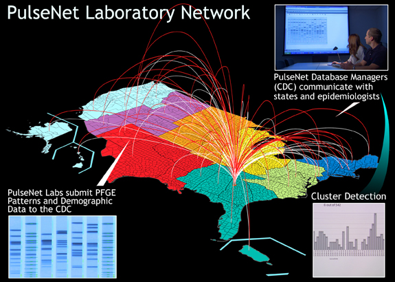
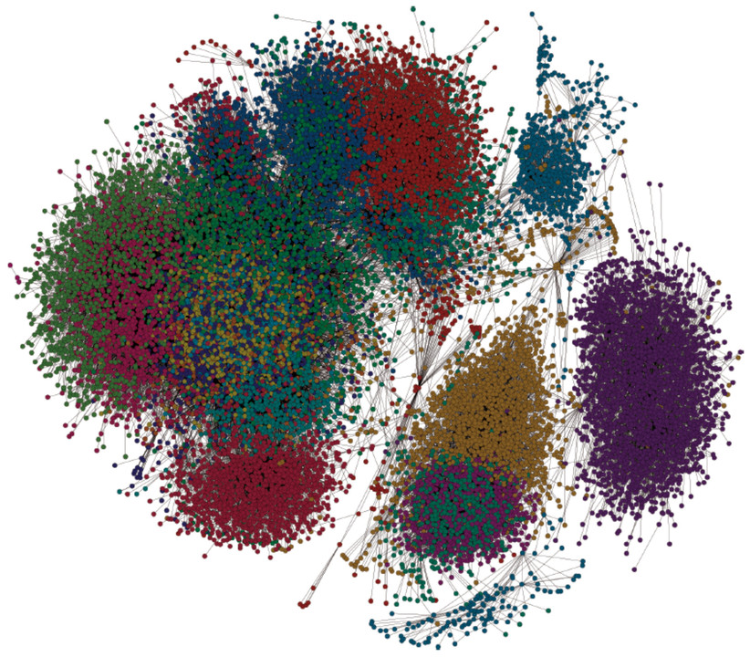
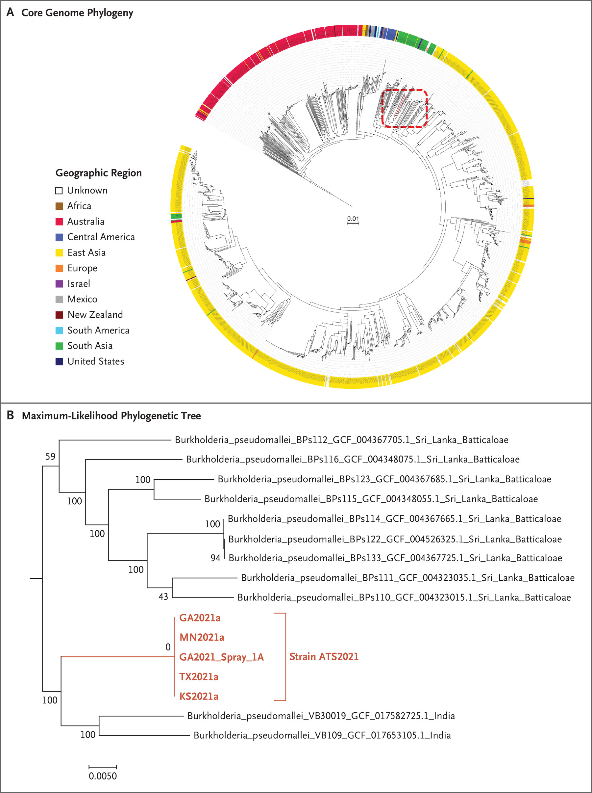
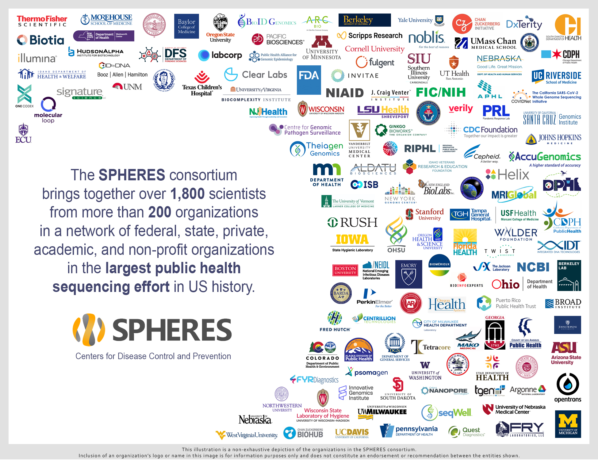

4 Week 4
5 Guest Lecture from Duncan MacCannell, Pathogen Genomics in Public Health
Director of Office of Advanced Molecular Detection (AMD)
Division of Infectious Disease Readiness and Innovation
National Center for Emerging and Zoonotic Infectious Diseases at CDC
@drm@mstdn.science
cdc.gov/amd
6 Advanced Molecular Detection (AMD)
AMD started at end of 2013 (FY2014) as a $30m/yr, now $40m/yr budget.
Five objectives:
- Improved pathogen detection & characterization
- Enable new diagnostic methods to meet public health needs
- Build genomic & bioinformatics capabilities
- Implement enhanced, sustainable, integrated information systems
- Develop tools for prediction, modeling, and early recognition of emerging infectious threats.
New CDC center for forecasting infectious diseases, new centers for excellence initiative provides promise on the predictive front.
6.1 Areas of Emphasis
Advanced laboratory technologies/approaches:
- NGS for pathogen (meta)genomics, (meta)transcriptonomics
- Mass spectrometry, CRISPR
- Platforms: Illumina, PacBio, IonTorrent, Oxford Nanopore, etc.
- Other tech: MALDI-ToF, CRISPR, proteomics, microfluidics, etc.
- CDC Facilities; state/local public health laboratories, field.
IT:
- IT infra; storage; networking, high-performance computing, cloud
- Bioinformatics and scientific computing core support
- CDC High Performance Computing Center of Excellence
- Lab/epi data aggregation, integration, visualization and reporting
Integration remains a problem: most data stop at the laboratory door.
Strategic coordination and program support
- Funding 30+ CDC AMD project activities
- Promotion of standardized platforms, methods, shared resources, bioinformatics, and QMS
- Coordination of state-based activities & initiatives
- Connections with federal (FDA, NIH, NIST, DoD, DHS)
Workforce development
- Training, recruitment, administrative, fellowships
6.2 Workflow
Input: DNA/RNA
Source: Genomic, Amplicon, Whole Sample
Host/vector/pathogen/environment
=>
NGS Workflow:
Platforms chemistry, performance characteristics, labor/TaT Expertise Cost
=>
Bioinformatics Workflow:
- Hardware/software
- Specialized skillsets
- Algorithmics/pipelines
- Pathogen databases
- Data analysis/interpret/integration/visualization
=>
Output: Information from Sequence Data
- Comparative genomics
- Identification
- High res Straintyping/Subtyping
- Cluster identification
- Molecular evolution
- Genotypic characterization
- Virulence, AR, Signatures
- Functional annotation
- Diagnostic dev/validation
- Minor populations, quasispecies
- Host/pathogen expression
- Metagenomics
- Pathogen identification/discovery
- Culture-independent diagnostics
- Microbial ecology/diversity
For example, we might be looking for markers of bioengineering for biosecurity monitoring.
It’s hard to stress just how important new bioinformatics workflows have been in affecting public health. Even just a few years ago pulse gel electrophoresis and fragment sequencing were still quite niche and often had to be pathogen-specific.
Primary Databases: SRA, GenBank, open public databases. Quality of annotation varies, quality varies. One really needs a level of expert curation to create a high quality database. It’s grunt-work that needs to be done.
BioWatch program screens for known pathogens in the air. The problem is what constitutes a signal?
Metagenomics is still only almost cost-effective. The computational challenges are still quite high.
6.3 Foodborne Disease Surveillance
~48 million foodborne illnesses occur in the US each year, resulting in 128,000 hospital admissions and 3,000 deaths.
Although most cases occur as part of unrecognized outbreaks, >1,000 outbreaks are reported each year.
PulseNet, a national network of public health and food regulatory agency laboratories, has played a key role in identifying and stopping outbreaks of foodborne illness.
Pathogens/foods linked to most foodborne illnesses:
- Campylobacter (poultry)
- …

https://www.cdc.gov/foodsafety/foodborne-germs.html
WGS-based analysis of putative multistate of PFGE-indistinguishable Salmonella Heidelberg (Xbal: JF6X01.0022)
Contemporaneous timeframe, similar presentations, possible link?
6.4 Growing PHL NGS Capacity
Growing applications:
- PulseNet, influenza, Healthcare-associated infections, bacterial meningitis, Cryptococcus, Cyclospora, Viral hepatitis, Gonococcus, Influenza, Legionella, Malaria, Streptococcus, Tickborne diseases, Tuberculosis,…
https://pubmed.ncbi.nlm.nih.gov/29047425/
https://wwwnc.cdc.gov/eid/article/23/11/17-0308_article
Satellite imagery helped locate cooling towers.
Outbreak of Extensively Drug-resistant Pseudomonas aeruginosa Associated with Artificial Tears https://www.cdc.gov/hai/outbreaks/crpa-artificial-tears.html
Caused multiple cases of blindness, several cases of death.
6.5 Influenza Vaccine Strain Selection
Wentworth/Barnes/Neuhaus (CDC/NCIRD/ID)
The old way was:
Specimen collection -> Isolation and propagation -> Phenotypic analysis (in a host species) -> Traditional Sanger Sequencing
New model:
Specimen collection -> 10,000 per year Sequenced in ~1 week -> Isolation and Propagation -> Phenotypic Analysis
Facilitated by next generation sequencing (MiSeq and NextSeq).
Rambo-Martin, Keller, et al. bioRxiv 2019 https://doi.org/10.1101/585588 https://www.biorxiv.org/content/10.1101/585588v1
Hepatitis C Virus Outbreak — HCW
18 cases, index case was HCW
154,233 error-corrected reads
33,767 unique sequences
Each node is a unique sequence
Different patients are shown in different colors
Two sequences are linked if they differ at a single nucleotide position
Network analysis using GHOST

Multi-state outbreak of Meningitis from a New England lab not operating up to code https://www.cdc.gov/hai/outbreaks/meningitis-facilities-map.html
Litvintseva et al (JCM 2014)
Pathogen identified as Fungal Meningitis, Exserohilum rostratum, not typically a human pathogen.
Fungal Meningitis Outbreak Associated with Procedures Performed under Epidural Anesthesia in Matamoros, Mexico https://www.cdc.gov/hai/outbreaks/meningitis-epidural-anesthesia.html
Multistate Outbreak of Melioidosis Associated with Imported Aromatherapy Spray, NEJM, 2022 https://www.nejm.org/doi/full/10.1056/NEJMoa2116130

6.6 Molecular Epidemiology of Cyclosporiasis
Ten years ago, molecular typing of Cyclospora cayetanensis was all but impossible.
Advances in isolation methods, sequencing, and bioinformatics has enabled reliable typing of the parasite.
After applying these methods and building a database including thousands of reference sequences, CDC scientists discovered that there are not one but three highly diverged populations of Cyclospora that will not interbreed.
https://www.cdc.gov/amd/whats-new/cyclospora.html
This finding has significant implications for surveillance, prevention and source attribution.
This is a new era in genomic parasitology.
Joel Barratt, NCEZID DPDM*
cdc.gov/amd/whats-new/cyclospora.html
Locally acquired cases of malaria (2023): rapidly developed an AmpliSeq-based method focused on P. vivax and comprising more complex marker panels than MaRS combined with the cyclone analytical approach.
Brian Raphael, Molly Freeman, Joel Barrett, DPDM
6.7 US SARS-CoV-2 Sequencing December 31, 2020
19.8M US Cases, 57.3k sequences, including 20 SPHLs.
The SPHERES consortium: https://www.cdc.gov/coronavirus/2019-ncov/variants/spheres.html

Where are we now?
At 16 million global sequences, SARS-CoV-2 is the most extensively sequenced pathogen in history.
Of those 16 million global sequences, about 1/3 are from the US.
21% are from local/state/federal public health surveillance
Trying to do phylogenetic analysis on the scale of ~6.5-million sequences, the bayesian approaches we typically go to totally break down.
Other considerations:
- New Wastewater systems
- One Health
- New traveler’s health system
Barriers to genomic surveillance in public health practice:
- Sample Acquisition
- Selection & Prioritization
- Maintaining cold-chain
- Representativeness
- Laboratory
- Deficiencies in q-tips
- Need to roboticize
- Supply chain
- Instruments
- Vendor lock-in
- Workforce
- How do you maintain an effective workforce?
- Information Technology
- How do you provide these technology when most state health departments already have vendor contracts?
- This is a major reason why so much sequencing is submitted ot be done done at CDC
- How do you provide these technology when most state health departments already have vendor contracts?
- Quality Management
- Example datasets
- Bioinformatics and Genomic Epidemiology
- Global skills gap
- Complex workflows
- Benefits/deficiencies of open source
- i18n
- Communication/Dissemination
- Dashboarding / data exploration / dataviz
- Collaboration / partnership
- Reporting/interpretation and data sharing
There is a new CDC/APHL fellowship program — everything from software engineering.
https://www.cdc.gov/amd/training/covid-19-gen-epi-toolkit.html
https://covariants.org/ https://outbreak.info/ https://scholar.harvard.edu/cvt/home
Pathogen Genomics Centers of Excellence
https://www.cdc.gov/amd/resources/scientific-superhero-posters.html